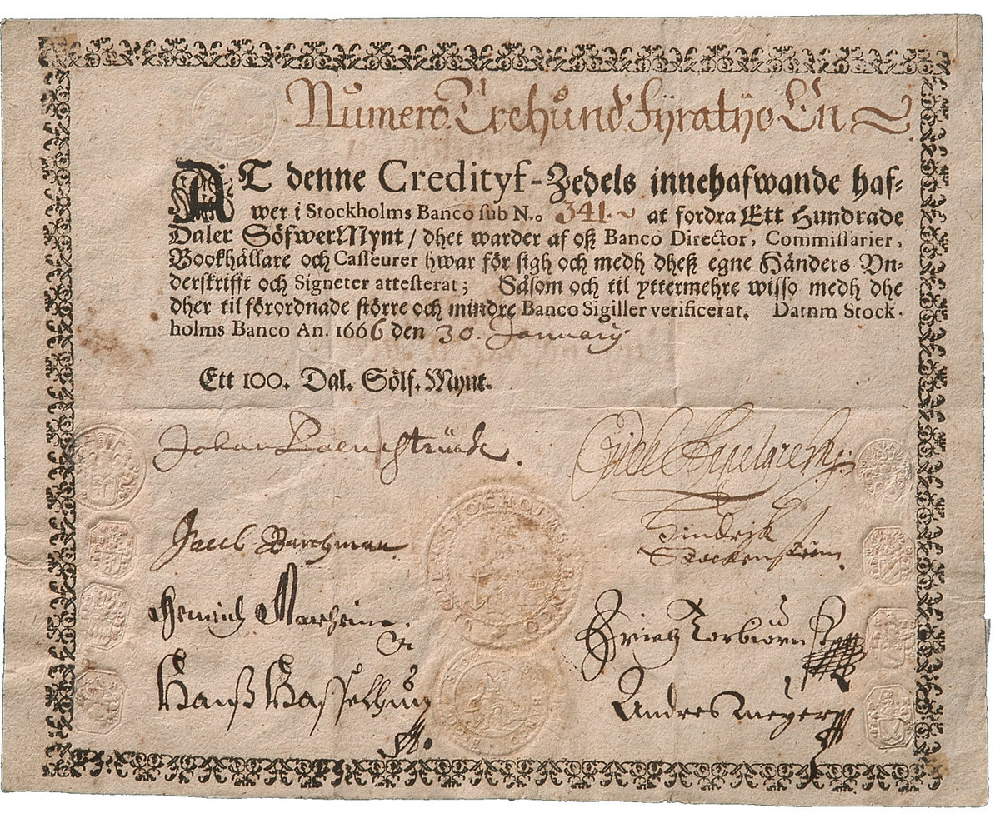
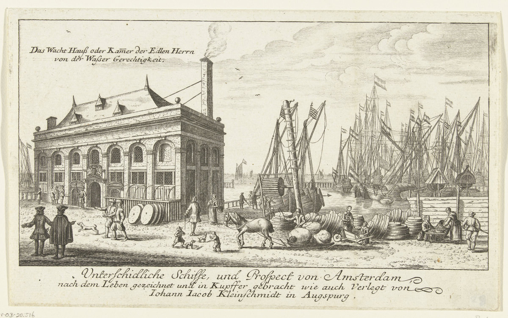
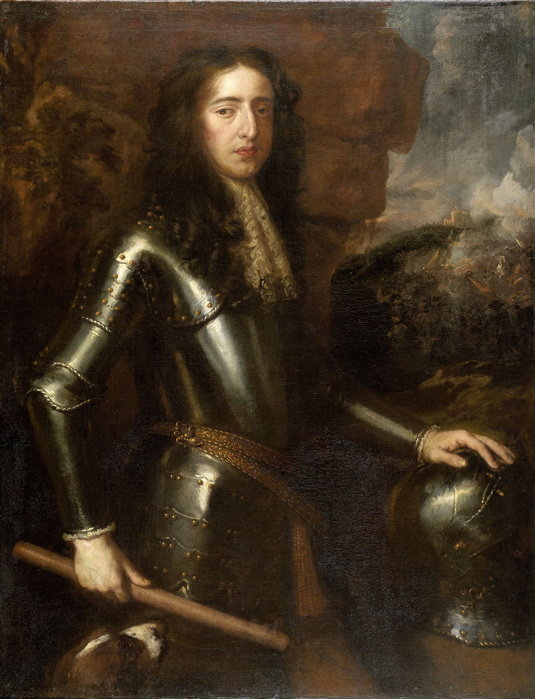
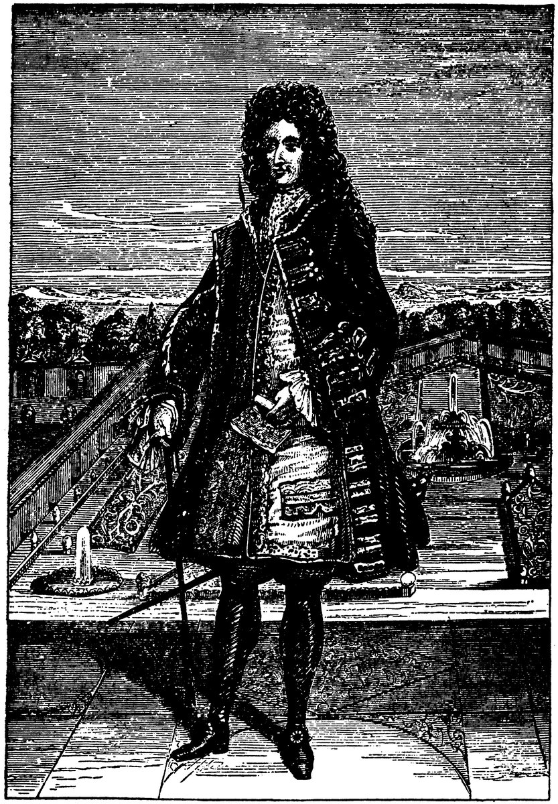
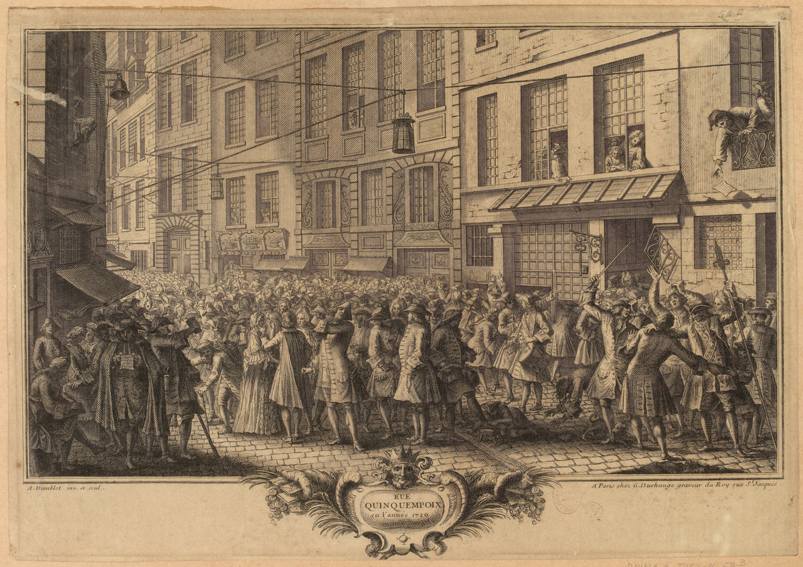

Antes de 2008, mucho antes
Si tienes entre treinta y cincuenta años, seguro que te acuerdas de 2008. Bancos que parecían de piedra se tambalearon de un día para otro. En España muchas familias perdieron sus casas. Lo vivimos como algo nuevo, como si nunca hubiera pasado nada igual.
Pero no era la primera vez. El primer gran tropiezo de un banco con su propio dinero, de papel, ocurrió hace más de tres siglos y medio. Y la historia es la misma. No es que se parezca muchísimo: es la misma.
1661: el primer papel que se pudo tocar
Viajamos a Suecia. Y ahí la moneda era de cobre y pesaba tanto que, para pagar una cantidad grande, hacía falta un carro. En aquel entonces, el dinero viajaba a caballo y en barco, y el transporte no era cómodo. Un banquero llamado Johan Palmstruch tuvo una idea. En el mismo año, su banco empezó a dar billetes de papel que se podían cambiar por esas monedas: los primeros billetes de banco de Europa. La velocidad del dinero sigue siendo la misma, sigue viajando y cruzando mares, pero el peso del transporte baja. Por primera vez, la gente llevaba su dinero en un papel que podía doblar y guardar.

Funcionó tan bien que el banco se animó… y empezó a imprimir más billetes de lo que el metal que tenía de verdad podía sostener: el billete era de papel, y lo que le daba valor era el metal guardado detrás. Cuando la gente fue a cambiarlos, no había para todos. El banco cayó a los pocos años. De sus restos nació en 1668 el Riksbank, que hoy es el banco central más antiguo que sigue existiendo. Escarmentado, al principio no quiso emitir billetes como los de Palmstruch.
Ojo: papel, no dinero digital
Aquí conviene aclarar una cosa, porque es fácil confundirse. Cuando decimos que el dinero «deja de ser metal», no hablamos de nada digital, ni de tarjetas, ni de pagar con el móvil. Hablamos de papel. Un billete que se podía tocar, doblar y llevar en el bolsillo, y que valía porque alguien prometía cambiarlo por metal.
Volvemos atrás: Ámsterdam, 1609
La idea de que un papel pudiera valer como el metal no nació de la nada. Unas décadas antes, Ámsterdam era el gran mercado de Europa, y por su puerto entraban monedas de medio mundo, muchas limadas o falsas. Para poner orden, la ciudad abrió en 1609 el Banco de Ámsterdam.

El mercader dejaba allí sus monedas y el banco le apuntaba en un libro cuánto tenía. Para pagar a otro, ya no hacía falta cargar sacos: bastaba con pasar la cifra de una cuenta a otra. Más adelante, el banco empezó a dar recibos por el metal depositado, y esos recibos se compraban y se vendían de mano en mano. El metal se quedaba en la cámara, y lo que circulaba era un papel con una promesa.
1694: un banco para pagar la guerra
En Inglaterra, el rey Guillermo III estaba en guerra con Francia y necesitaba dinero. Un grupo de comerciantes le ofreció un préstamo y, a cambio, consiguió permiso para crear un banco: el Banco de Inglaterra. Sus billetes, al principio escritos a mano, eran recibos que prometían pagar en metal a quien los presentara. Otra vez, un rey y una guerra detrás del dinero.

1716-1720: John Law y la burbuja del Misisipi
Francia salió de las guerras de Luis XIV ahogada en deudas. Un escocés, John Law, convenció al regente de que el papel podía sustituir al oro. En 1716 abrió un banco que emitía billetes, que después pasó a ser el banco del rey, y lo unió a la Compañía del Misisipi, que prometía riquezas en América.

Todo el mundo quiso acciones, y para comprarlas se imprimían más y más billetes. Cuando la gente quiso cambiar su papel por metal, no había suficiente. En 1720 la burbuja reventó, miles de familias se arruinaron y Francia desconfió del papel moneda durante generaciones.

1800: papel por todas partes
Hacia 1800, en buena parte de Europa ya se pagaba con papel. Pero siempre era un papel con una promesa detrás: «se lo cambio por metal». Mientras la promesa se cumplía, nadie pedía el metal. Cuando alguien empezaba a dudar, todos corrían a la vez.
Casi 140 años en una sola historia
Si lo miras de lejos, desde aquel primer billete de Estocolmo hasta 1800 pasan casi 140 años. En ese tiempo el papel nace, fracasa, muere y vuelve a nacer. Se mueve a la velocidad de un caballo, pero el miedo, cuando llega, corre más que nadie. Y cada vez que alguien imprime más de lo que puede respaldar, la historia acaba igual.
Las herramientas cambian, el ciclo no
Hoy el dinero ya no viaja a caballo. Pulsamos un botón en el móvil o en la pantalla y ya hemos enviado o recibido dinero, sin tocar nada físico. Pero si vamos a un cajero, todavía podemos tener esos billetes en la mano.
Y aquí va la pregunta final: detrás de los números que vemos en la pantalla, ¿existen de verdad esos billetes? ¿O volvemos a recordar lo que pasó en Estocolmo, en Ámsterdam o en París?
Cambian las herramientas. El ciclo no.
Esta historia forma parte de la serie «La historia del dinero». En «La mancha invisible» nos detuvimos en el Banco de Ámsterdam. Si quieres ver qué ocurrió cuando, ya en el siglo XX, el billete dejó de cambiarse por metal, sigue con «Adiós al oro».
Fuentes
- Imágenes, de Wikimedia Commons, descargadas el 21 de noviembre de 2026: cabecera, Willem Swidde / Erik Dahlbergh, «Stockholm från öster», Suecia Antiqua et Hodierna, grabado impreso en 1693, Kungliga biblioteket (dominio público) https://commons.wikimedia.org/wiki/File:Suecia_1-013_;_Stockholm_från_öster.jpg · Billete del Stockholms Banco (kreditivsedel) fechado el 30 de enero de 1666, Sveriges Riksbank (dominio público) https://commons.wikimedia.org/wiki/File:Kreditivsedel_1661.png · «Haven van Amsterdam met het wachthuis», grabado (hacia 1697-1772), Rijksmuseum RP-P-OB-20.516 (CC0) https://commons.wikimedia.org/wiki/File:Haven_van_Amsterdam_met_het_wachthuis_Das_Wacht_Hauss_oder_Kamer_der_Edlen_Herrn_von_der_Wasser_Gerechtigkeit_(titel_op_object)_Unterschidliche_Schiffe,_und_Prospect_von_Amsterdam,_nach_dem_Leben_gezeichnet_und_in_Kupf,_RP-P-OB-20.516.jpg · Willem Wissing (estilo), «Guillermo III, príncipe de Orange, rey de Inglaterra», hacia 1680-1710, Rijksmuseum SK-A-1228 (dominio público) https://commons.wikimedia.org/wiki/File:William_III_of_England.jpg · William Greatbach, retrato de John Law publicado en ediciones de Extraordinary Popular Delusions de Charles Mackay (dominio público) https://commons.wikimedia.org/wiki/File:John_Law.png · Antoine Humblot, «Rue Quincampoix en l'année 1720», hacia 1720, Musée Carnavalet / Paris Musées, G.13190 (CC0) https://commons.wikimedia.org/wiki/File:Rue_Quincampoix_En_l'année_1720,_G.13190.jpg.